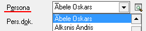
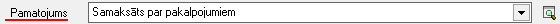
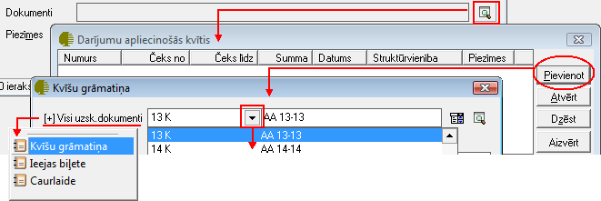

Kases ieņēmumu orderis¶
Kases ieņēmumu orderis jāveido, kad tiek saņemta nauda kasē no uzņēmuma darījuma partneriem. Kases ieņēmumu orderi tiek saglabāti dokumentu žurnālā Kases ieņēmumi , un dokumentam ir iebūvēta standarta izdrukas forma. Darījuma atšifrēšanai pa finanšu (EK) kodiem, jāaizpilda dokumenta saturs. Lai dokumenta izdrukā parādītos grāmatojumu konti, dokuments pirms izdrukāšanas ir jāiegrāmato.
JaunaKases ieņēmumu orderapievienošana¶
Izvēloties dokumenta veidu Kases ieņēmumu orderis, tiks atvērts jauns logs:
{kind=link}
Kasesieņēmumu orderaVirsraksta aizpildīšana¶
Lai aizpildītu Kasesieņēmumu ordera Virsrakstu, nepieciešams:
1. Norādīt Uzņēmuma kasi, uz kurusaņemta nauda kasē no uzņēmuma darījuma partneriem:

Izvēlēties Datumu, kurā šisKasesieņēmumu orderistiek veidots:

3.Ievadīt kopējo Kasesieņēmumu ordera summu:

4. No saraksta izvēlēties nepieciešamo Maksātāju - Juridisku vai fizisku personu, no kura nauda kasē tiek saņemta:

5. No saraksta izvēlēties nepieciešamo Personu - fizisku personu, no kuras nauda kasē tiek saņemta:
{kind=link}
Aizpildot lauku Persona , lauks Pers.dok. tiks aizpildīts automātiski, pie nosacījuma, ja šie personas dati būs aizpildīti Partnera kartiņā:


Noformējot skaidras naudas operāciju Juridiskai personai, laukā Piegādātājs jāvada Juridiskās personas nosaukums un laukā Persona - Fiziskās personas nosaukums, kura šo Juridisko personu pārstāv. Noformējot skaidras naudas operāciju fiziskai personai, gan laukā Piegādātājs , gan Persona , jānorāda Fiziskas personas nosaukums.
Kases ieņēmumu orderaSatura aizpildīšana¶
Lai aizpildītu dokumenta Saturu, dokumenta satura daļā nepieciešams nospiest pogu

un tiks atvērts operācijas satura logs, kurā nepieciešams aizpildīt satura ierakstus (uzņēmumā izmantotās dimensijas) un norādīt satura ieraksta summu:

Dokumenta saturs var sastāvēt no vairākiem satura ierakstiem, kas kopsummā veido Dokumenta Virsrakstā norādīto summu.Pievienot nākamo satura ierakstu iespējams, satura daļā atkārtoti nospiežot pogu .. image:: images_ozols/24708.png
- scale
100%
.
Kasesieņēmumu ordera Pamatojuma aizpildīšana¶
Kasesieņēmuma orderalauks Pamatojums tiek drukāts kasesieņēmumu ordera rindā Pamatojums.
Lauku Kasesieņēmumu ordera Pamatojums , iespējams aizpildīt manuāli vai izvēloties no Kases paskaidrojumu saraksta :
{kind=link}
Dokumentu piesaiste Kases ieņēmumu orderim¶
Kases ieņēmumu orderim iespējams piesaistītStingrās uzskaites dokumentusno Darījumu apliecinošo kvīšu , Kultūras un citu pasākumu ieejas biļešu vai Caurlaižu žurnāla,nospiežot uz lauka Dokumenti labajā pusē esošās lupas pogas un pievienojot nepieciešamo Stingrās uzskaites dokumentu:
{kind=link}
Kad izvēlēts nepieciešamais uzskaites dokuments un ierakstīta dokumenta summa, ierakstu iespējams pievienot, nospiežot .. image:: images_ozols/24874.png
- scale
100%
vai arī, ja nevēlaties dokumentu pievienot - .. image:: images_ozols/24875.png
- scale
100%
.
Lai izvēlētos uzskaites dokumentus piesaistītu Kases ieņēmumu orderim, logā “Darījumu apliecinošās kvītis” nepieciešams nospiest .. image:: images_ozols/24876.png
- scale
100%
un dokuments tikspievienots Kases ieņēmumu orderim:

Kad visi nepieciešamie lauki ir aizpildīti, Kases ieņēmumu orderis ir sagatavots un to ir iespējams:
Saglabāt,nospiežot pogu

-dokuments tiks saglabāts un būs pieejams apskatei/labošanai/grāmatošanai:doc:Kases ieņēmumu žurnālā<227> .
2. Apstiprināt, nospiežot rīku joslā pogu .. image:: images_ozols/24740.png
- scale
100%
Kases ieņēmumu orderis tiks Apstiprināts un to būs iespējams
Grāmatot.
Kases ieņēmumu orderagrāmatošana¶
Kases ieņēmumu orderiiespējams grāmatot no atvērta dokumenta vai izvēloties (iezīmējot)dokumentu Kases ieņēmumu žurnālā .
Lai iegrāmatotu Kases ieņēmumu orderi, dokumentu nepieciešams Apstiprināt, nospiežot rīku joslā pogu .. image:: images_ozols/24740.png
- scale
100%
.
Apstiprinātu dokumentu ir iespējams grāmatot, nospiežot rīku joslā pogu

.
Instrukcija - Dokumentu grāmatošanas principi
PievienotāKases ieņēmumu ordera labošana¶
Labojumus saglabātajādokumentā iespējams veikt atverot dokumentu Kases ieņēmumu orderis, kurš pieejams apskatei/labošanai:doc:Kases ieņēmumu žurnālā<227> .
Lai veiktu labojumus,dokumentunepieciešams atvērt, izmantojot rīku joslas pogu

(ALT+A), unatvērtajāierakstā iespējams veiktnepieciešamos labojumus:

Pēc labojumu veikšanas, veiktā izmaiņas iespējams .. image:: images_ozols/24615.jpg
- scale
100%
vai

.